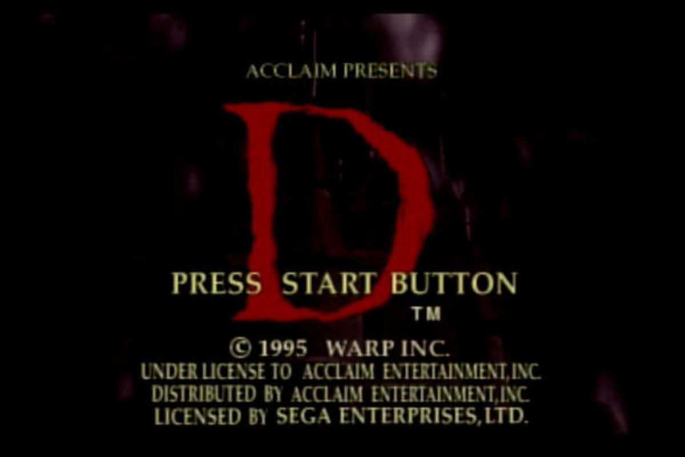
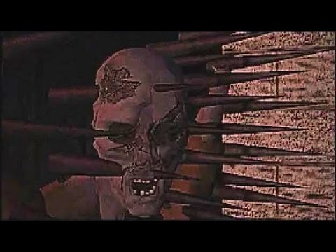
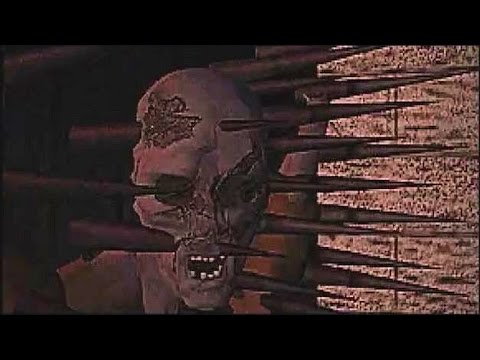

INSOMNIAC GAMING
(Intro about my gaming history and gaming tastes go here.)
 VG Import and Translation Resources:
VG Import and Translation Resources: 
My Personal Collection:
Consoles | Game Count
- NES | 16
- SNES | 13
- Switch | 35
- Sega Genesis | 15
- Sega Saturn | 26
- Sega Dreamcast | 19
- Playstation | 16
- Playstation 2 | 31
- Playstation 3 | 21
- Playstation 4 | 30
- PC-Engine/Turbografx Duo | 24
Handhelds | Game Count
- Gameboy/Gameboy Color | 16
- Gameboy Micro (GBA) | 17
- DS | 19
- 3DS | 18
- Neo Geo Pocket Color | 11
- Wonderswan SwanCrystal | 12
- Game Gear | 6
(If you want to see anything let me know!)
HORROR GAMES FOR HALLOWEEN!
I love this the atmosphere this time of year. I love the weather, the chills, and all of the frights! There are many things I love to do to get in the spirit of this spooky season but one of the things I love to do most is dive into horror games! I have a thing for obscure and underrated scary games, (or games in general really," and this month I am excited to share some of the best ones many might have missed. Games such as..
D
Enemy Zero
Illbleed
Ib
and more...
I hope my amusement brings some to you as well. Happy Halloween month!
Image Gallery

D, D2, and Enemy Zero

Clock Tower, Ib, and Deep Fear

Illbleed, Fatal Frame, and Ring: Terrors Realm
MINI-REVIEWS
10/17/2020
D
D, (or D no shokutaku), created by Japanese indie developer Warp, is a very early entry in the horror gaming genre. First released on the 3DO, Saturn, PS1, and PC in 1995, it was the first fully CGI video game and is an oft-forgotten gem in the horror gaming Genre. While it was a huge success in Japan it just reached cult status in the west, but has more or less unanimously been praised for its daring approach and creative quirks.
In D, you play as Laura Harris who is called to a Los Angeles hospital after her father Doctor Richard Harris has gone on a sudden mass shooting spree inside. The police have called Laura to try and reach the mad doctor and talk him down from his madness. Upon entering the hospital however, Laura is warped to what seems to be a mid-evil castle. Upon witnessing a ghostly vision of her father trying to reach her, Laura decides to venture through the dangerous and twisted castle to find her father, save him, and unravel the mystery along the way.
The game plays sort of similarly to Myst and other PC adventure games at the time where you are on rails, moving from point to point by predetermined paths as you choose. It is unique with its storytelling, level of graphic scenes (which I would love to spoil here but they are too dang cool) for the time, and the fact that the game has a two joe time limit. Don't solve the mystery by then and Laura is trapped in the mysterious castle forever.
There are puzzles to solve as you advance through the castle and many cutscenes revealing scares and plot points. While they must have been impressive at their time, the graphics do look fairly dated today. Luckily D is so rich with atmosphere and tension and is blessed with good direction that the dated visuals don't really hamper the experience all too much. Even the terrible English voice acting doesn't hold the package down. (Much)
D's Development has some crazy rich lore which is worth a look. It involves secret plot decisions, bridges burned with publishers, and an insane plot to bypass censor boards. Aside from the aforementioned voice acting and dated visuals I don't have many marks against D. It's two hour time limit does hamper replay value a little bit but I still take it out and enjoy it once or twice a year.
I say D is definitely worth a look! Check it out.
RETROSPECTIVES
KENJI ENO, FORGOTTEN MAD GENIUS OF THE EARLY INDE SCENE
by Mike Anthony

ENTERTAINMENT, IMAGINATION, AND MAGNIFICENCE
Ask random gamers off the streets what they think of the late game designer, Kenji Eno, and most would certainly all give you the same answer: Who is Kenji Eno? But, ask gamers whose roots in video games reach a bit deeper and span back through the later half of the 1990s, and many will express a polarizing set of sentiments either glorifying the man’s works and impact on video games, or angrily dismissing his career as trash. At the end of the day however, it doesn’t matter whether his games were widely loved or not. Kenji’s restless, creative spirit and unorthodox methods led to the creation of digital experiences that evoke strong, emotional responses from players and spectators with a wide range of tastes. Even today, his works from the 1990s captivate players at levels that many of today’s modern games fail to reach. The problem isn’t that Kenji Eno’s career lacked an impact; it’s that his contribution to video games and his punch to the industry itself is so often overlooked and forgotten.
Kenji Eno’s entry into the video game industry happened almost purely by chance. After dropping out of a respected high school and traveling Japan for a short while, Eno began seeking regular employment from a popular job recruiting magazine and found two jobs back to back. He quit each on the first day after reaching disagreements with the management. On his third search from the same magazine, he found a position at a small game company. After about a year and a half working there in sound design and project planning, he quit to form his own independent game company, EIM (Entertainment, Imagination, and Magnificence). At first, Eno was quite satisfied with his small company, but as his creative control slipped away and he was forced to modify his projects to include and revolve around licensed characters he became deeply upset with his work. “I had to tell my people that making character games is cool… but I myself wasn't convinced of that... Toward the end, there was a period where I wouldn't even go to my office because I was so upset." Feeling trapped, Eno closed EIM and left video games to work as a consultant for a famous automotive magazine.
After two years of consulting work, Eno traveled to San Francisco and found his way to a convention for the PC counterculture. He enjoyed the scene and began to see programming and computers in a new light. When the convention promoters took the stage, Eno was ready to leave, but the crowd took him by surprise. “I was thinking, ‘OK, we don't need to listen to suits; let's get out of here.’ But, actually, the creators that were there were giving the sponsors applause and really appreciating them, because the sponsors were supporting them so they were able to make their creations” (Bettenhausen and Mielke). On the flight back to Japan, Eno told his boss that he wanted to start making games again. With his bosses blessing and investment in his idea, Kenji Eno started the game studio that made his name: WARP.
WITH A CAPITAL D
Kenji ’s first project with his new independent game studio, WARP, was the horror title D No Shokutaku, known simply as D outside of Japan. The basic idea for D at the start was fairly simple: Explore a spooky castle and solve a few brainteasers to find your way out. However, Eno was not content with following the norm for his breakthrough title. Instead of using the standard, blocky 2D graphics that were common at the time, Eno and his team decided they would make the world’s first 100% CGI (computer generated imagery) game. To make this approach stand out even more, they designed D to play as a sort of interactive movie. Instead of just clicking on an item and then it’s yours, all actions in the game played out as little movie scenes. For example, when a player clicked on a bookshelf, instead of text box popping up describing what’s happening, The character would walk over and flip through the book, showing the player instead of telling. To further the idea of the interactive movie as a game and absorb the player in the experience, Eno and his team decided to not make the character the player controlled, Laura, some generic, throwaway personality, but instead a “digital actress” to use in future games that would play off of the movie style. In each of Kenji Eno’s three most notable titles, Laura plays a different character. Her personality is different, her style might be different, but she is always a blonde, blue-eyed woman who almost never speaks. Instead, the players are fed her thoughts and feelings through her actions and mannerisms. WARP always aimed to make her a proxy of human emotion and expression. She is designed to invoke empathy to draw the player into any situation and up the stakes and importance for her to succeed. While time hasn’t been kind to the game, it hasn’t exactly been cruel either. I first played D in 2004 and while there is no denying that the visuals and clunky movement throughout the game has aged poorly; the characters, tone, and overall ambiance are all just as engaging as they were back in 1995. When the game was nearing completion and all of the concepts were in place, Eno decided to add a dash of controversial content to hopefully boost sales. Flashbacks were inserted into the story adding a mysterious subplot involving murder, vampires, and cannibalism. On the page, this afterthought sounds tasteless and unnecessary, but it actually ties into the main plot in a fascinating way and is relatively tame, even for the standards of the time in which it was released.
However, knowing that this would be difficult to explain and banned by censors, Eno developed a devious plan to get his game to market with his radical ideas in tact. “There was a penalty you had to pay if you're late in submitting the master [master copy of the game], but you'd also have to deliver it by hand. So, knowing this, I submitted it late on purpose. I submitted a clean one and got it approved. Then I had to bring it to America. So on the plane, I switched the discs and submitted it to 3DO (game publisher), and it got manufactured like that” (Bettenhausen and Mielke). Eno’s devious plans worked and D went on to be a mega hit in Japan, qualifying for the greatest hit labels on Sony, Sega, and 3DO systems. In the U.S. and Europe, D enjoyed a quiet, but dedicated cult following.
Eno was happy that he had succeeded in producing a hit game on his own terms, but he refused to let WARP fall into a pattern. To counter the idea that WARP was going to stick with visually flashy thrillers, he shook things up with his next releases; Short Warp, a collection of mini-games parodying WARP’s other works, and the unusual Mahjong game, Oyaji Hunter Mahjong. “Usually, mahjong games let you strip a girl if you win the game. …But in my mahjong game, I created it so whenever an oyaji -- the Japanese term for a dirty, middle-aged bastard -- tries to do something bad to a girl, you go and play mahjong to save this girl. So I flipped the whole concept of mahjong games” Bettenhausen and Mielke). I found this concept hilarious. While many people find these sorts of scandalous games distasteful, very few people have the guts to do anything about it. To top all of this off, Eno got the acclaimed animator, Ichiro Itano to do the cutscenes (cinematic cutaways).

D was something brand new when it came out and became a hit in Japan
ZERO ENEMY TOLERENCE
The success of D and the notoriety of his quirky follow-ups thrust Eno and WARP into the eye of Japan’s gaming public. As the attention around him grew, Eno developed a new concept that built upon the interactive movie elements in D. To keep things interesting, he had plans to use sound in a new way to guide the player, directionally and emotionally. This led to the concept work for 1997’s Enemy Zero, a game where players explore a spaceship with deadly invisible enemies only detectable through sound cues. This new concept excited the major game companies and it didn’t take long for Eno to enter a big agreement with industry giant, Sony to develop the game exclusively for their Playstation game system. However, the deal soon soured as Sony tried to control Eno creatively and manipulated sales orders for D, printing only 28,000 when orders called for 100,000. Things escalated when Eno punched a patronizing sales official after being lied to about where his game was available in stores. Bridges were publically burned forever when he showed off the much anticipated trailer for Enemy Zero at a Sony press event, only to announce to Sony and the public that Enemy Zero and future titles would be exclusive to rival game company, Sega.
Enemy Zero has a beautiful soundtrack. Check it out
REAL SOUND
The methods of using sound chimes to guide the player, though infamously challenging, proved to be very effective with keeping players in a heightened anxious state, and a gorgeous soundtrack commissioned by Hollywood composer Michael Nyman pulled gracefully at heartstrings. Enemy Zero provides a vast, minimalist world for players to explore. Exploring the empty, twisting hall of the ship creates a palpable feeling of isolation that drives one to learn more about the sinister plot they are thrust into. The wonderfully expressive Laura once again drives it all along with her strong personality and very human responses to the action and tragedy around her. It’s hard not invest a piece of your heart in the wellbeing of the other characters on the ship. Kenji Eno masters sophisticated storytelling using tools of expression found only in gaming, at a level many games fail to reach now, over fifteen years later. Around the same time of Enemy Zero’s development, Eno found new inspiration to further explore the role of sound with storytelling in an interactive way.
“I had a chance to visit people who are visually disabled, and I learned that there are blind people who play action games. Of course, they're not able to have the full experience… So I thought that if you turn off the monitor, both of you are just hearing the game. So after you finish the game, you can have an equal conversation about it with a blind person. That's an inspiration behind this game”( Bettenhausen and Mielke).
From this idea, Eno and WARP set out to make Real Sound: Kaze No Regret (Real Sound: The Wind’s Regret). In Real Sound, the player relies entirely on sound cues to explore the mystery of a love story. The narrative in the game is rich with ambient noise to give a strong atmosphere of where the player character is and what’s going on around them. At certain points, a chime will sound and the player uses the game controller to provide input and develop the story. Different actions have different effects, leading to several possible endings. Excited by the possibilities this type of game could bring, Eno made a deal to make the game exclusively for whichever game company would donate 1,000 units of their game system to blind people. Again, gaming giant Sega won Eno’s alignment and the right for this unique experience.
D IS DEAD
After all of the drama with Sony, Enemy Zero, and Real Sound, Kenji Eno and his team at WARP decided to create the sequel to D for the new, upcoming 3DO system, the M2. Work began sometime in 1996 and was moving steadily along. D2 was set to be one of the first big titles for the system, and images from the game were already being published in magazines, drawing interest from the gaming public. Then, in mid-1997 when the project was about 50% completed, the M2 System was cancelled. With no compatible platform for the game to be transferred to, the project was cancelled. In 1998, Sega once again approached Kenji Eno and WARP for new software, this time for their upcoming Dreamcast system. Eno agreed to make a new title for the Dreamcast, and D2 became one of the first games announced for the new platform. Instead of building the old concepts and ideas from the cancelled D2, Eno and the team at WARP threw all of their old ideas out and decided to make a new game from scratch. Eno, always one to look two steps up in the distance, threw all their efforts at making an impressive game for the powerful new system.
This brand new D2 featured a whole new story, game style, setting, and featured the last appearance of the digital actress, Laura. D2 on Sega’s Dreamcast is both Eno’s most accessible game and the hardest to understand. The gameplay modes and difficulty were pretty standard for horror titles of the time, but the story was complex and at times convoluted. D2 was the first WARP game that I played, and at the time it had me completely hooked with its beautiful images and action heavy gameplay. However, after playing several of Eno’s early titles, it is easy to see that D2 has the weakest creative voice. The jumbled expression and lapse into the conventional exhausted Eno. The game became a sign for him to leave the gaming industry.
After a brief attempt to transform WARP into a different type of company, Eno disbanded the former game studio and left gaming behind. After leaving the gaming industry, Eno applied his creative approach to many endeavors. He worked on systems dealing with online music distribution, did several concept designs for businesses and restaurants, and even designed a system that allows people to buy things from vending machines via their cellphones, all while continuing small music projects on the side. Each of his various concepts and projects were built around ideas of communication, how people interact with technology, how staff interacts with customers- these concerns were the backbone for his successful endeavors. This includes games.
When reviewing Kenji Eno’s various games and post-WARP projects it’s interesting to see how similar his priorities and methods are. With all of his projects, Eno’s big priority was to reach people and make an impact on how they experience things; whether it’s changing users view on the importance of visuals in games or challenging how people interact with soda machines. His attitude and focus on the users experience remained consistent in his success.
Kenji Eno may not have had the reach of industry giants like Nintendo, Sega, or Sony, but that’s not really a bad thing. The freedom he sought and clung tightly to allowed him to experiment with his works in ways that big budgets and corporate influences forbid. His willingness to explore methods of communication and blur the lines of storytelling mediums led to the creation of titles that achieve great levels of impact and engrossment. Only recently has there been a surge in games that explore and toy with gaming conventions. This is largely due to modern conveniences around homebrewed game development and the ability to digitally distribute content. It’s funny to think of the contributions that Kenji Eno could have made if these options were more easily available in his lifetime. A few years before his death, Kenji Eno released his final game with his new company, Fyto for the Nintendo Wii’s download service. The game, You, Me, and The Cubes failed to make consumer impact but won acclaim of many critics who read deep themes of death, marriage, and child rearing of the curious puzzle game. To many, You, Me, and The Cubes was just another quirky indie game that seemed weird and untrustworthy. To the initiated like myself, it was a grand return of a lost mad genius.
The average gamer may have forgotten Kenji Eno, his controversies, and his games, but they see the results of his legacy everywhere these days. Would programmers in their basements still be making games on their own and putting them out on the internet if Eno was never around? Most likely, yes. Would they get serious recognition from the giants and high profile outlets if small, creative risk takers like Eno hadn’t gone and done their thing? I’m not so sure. In the past five years there have been several big studios making visually stunning interactive movie-type games that have gone on to earn boatloads of money and critical acclaim. Do they owe anything to D or Enemy Zero? I can’t say, but I can say this: Kenji Eno thought ahead of his contemporaries and many hit games today play based off foundations he established. It’s a shame that most gamers have no clue who he was, but it’s downright sad that todays ‘pioneers’ in the gaming industry don’t publicly acknowledge what came before them
Related links
 

One of my previous Halloween videos
Headed back to camp? Click below!

Remember, Sleep is overrated!